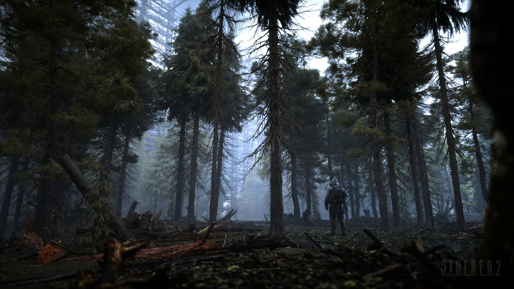

Історія розробки та деталі гри
 Офіційний сайт гриДругу частину почали розробляти одночасно зі «S.T.A.L.K.E.R.: Поклик Прип'яті» 2009 року. Офіційний анонс відбувся 13 серпня 2010 року, а вихід гри планували на 2012 рік. 9 грудня 2011 року Сергій Григорович призупинив розробку гри й 10 грудня розпустив команду. 25 квітня 2012 колишні розробники GSC Game World оголосили про створення нової компанії Vostok Games, анонсувавши свій новий проєкт — free-to-play MMO-шутер Survarium. На момент згортання розробки гри її рушій був готовий на 70—80 %, а також було зроблено декілька ігрових рівнів та персонажів. 12 грудня 2012 року компанія bitComposer оголосила про купівлю прав на створення комп'ютерних ігор на основі бренду S.T.A.L.K.E.R.. Того ж дня GSC Game World спростувала цю інформацію, підтвердивши, що всі права на гру належать компанії в особі Сергія Григоровича.
З невеликої кількості інформації відомо, що в грі буде один із найбільших відкритих світів у сетингу постапокаліпсису, а також масштабний нелінійний сюжет. Рішення гравця впливатимуть на долю персонажів, локальні події та на світ загалом.